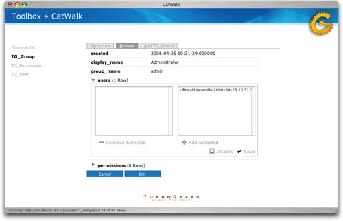

Contents
CatWalk is a single page (buzzword compliant) AJAX application build on top of TurboGears. With it you can easily interact with your application data model and manage your data. Think of it as phpMyAdmin or pgAdmin at the ORM level instead of the RDBMS. It is database agnostic, all it’s information is pulled out of SQLObject - not from the underlying data store.
There are two main ways in which you can access CatWalk. The preferred method is to open it directly from the toolbox.
You may instead want to mount CatWalk as a controller, though this may compromise data security. For example:
from turbogears.toolbox.catwalk import CatWalk
import model
class Root(controllers.Root):
catwalk = CatWalk(model)
# Your controllers here
You may then access CatWalk from the browser, like so: http://example.org/catwalk.
If your application is on a network, and you mount CatWalk as a controller, everybody on that network will be able to access CatWalk as well. To constrain access to it, you can use TurboGears’ identity.
Once you have set up and configured identity, you can constrain access to CatWalk using rules relevant for your setup. For example, in the following application there is an “admin” group and access to CatWalk is granted only to it’s members:
from turbogears.toolbox.catwalk import CatWalk
from turbogears import identity
import model
class Root(controllers.Root):
catwalk = CatWalk(model)
catwalk = identity.SecureObject(catwalk,identity.in_group('admin'))
CatWalk lets you configure the order of the columns by dragging and dropping. You can toggle their visibility as well.
The detail view lets you edit a record and manage its relations in context.